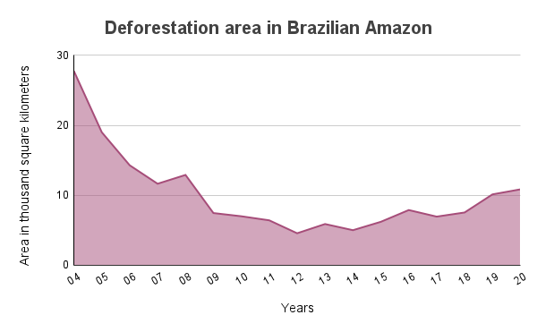

Deforestation in Amazon Rainforest

In 2020, the deforestation rate of the Legal Amazon region in Brazil reached the highest level in over a decade. It was estimated that almost 11 thousand square kilometers were destroyed that year, up from 10.1 thousand square kilometers a year earlier, the two highest figures reported since 2008. The Legal Amazon is an area of more than five million square kilometers comprising nine Brazilian states.
Following is a graph that shows the deforestation area in Brazilian Amazon from the years 2004 to 2020.
As can be inferred from the graph, the deforested area was significantly higher in the years 2004-2008. Although not significant, there was a reduction in the deforested area during the years 2009-2015. The years since then have witnessed a slight increase again. Note that this graph is only referring to the reduction in plant cover in Brazilian Amazon.